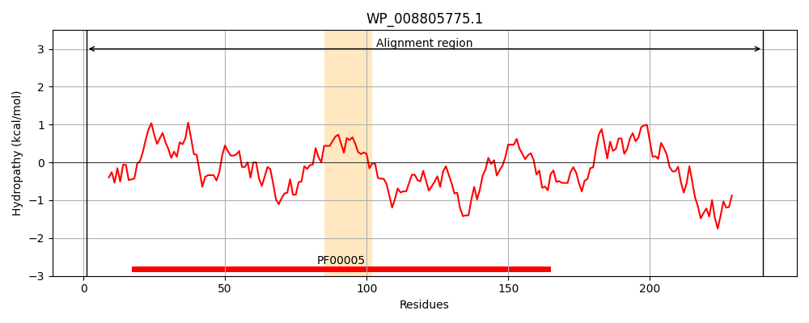
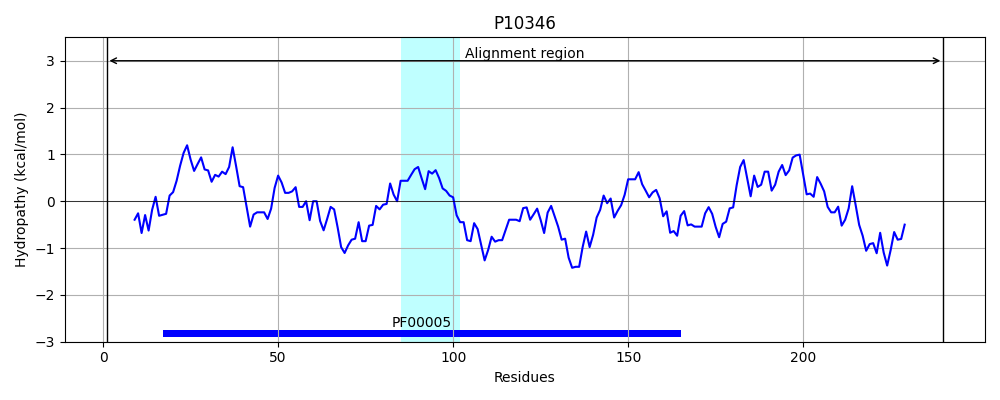
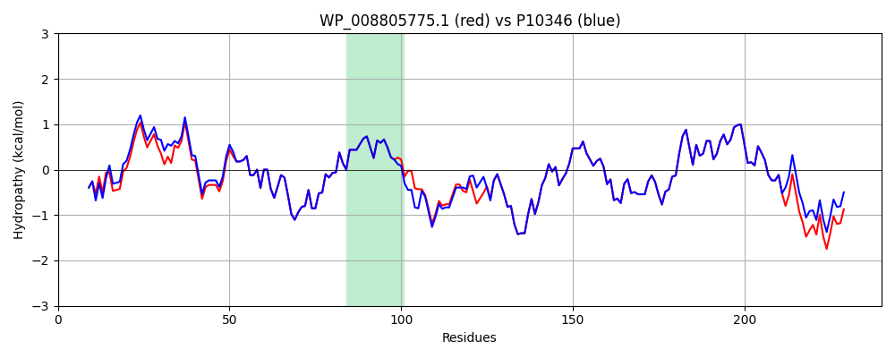

Hit Accession: P10346
Hit TCID: 3.A.1.3.2
Hit Description: gnl|BL_ORD_ID|8990 gnl|TC-DB|P10346|3.A.1.3.2 Glutamine transport ATP-binding protein glnQ - Escherichia coli.
Mach Len: 240
e:0.000000
Query TMS Count : 1
Hit TMS Count: 1
TMS-Overlap Score: 0.900000
Predicted Substrates:CHEBI:5432;glutamine
BLAST Alignment:
Score: 1138 , Bit scores: 442 bits, E-value: 3.0e-160, Alignment length: 240, Percentage identity: 93
Query: 1 MIEFKNVSKHFGPTQVLHDISLKINQGEVVVIIGPSGSGKSTMLRCINKLEEITSGDLIVDGLKVNDPKVDERLIRQEAGMVFQQFYLFPHLTALENVMFGPLRVRGASKQAAEKQAKDLLAKVGLAERAHHYPSELSGGQQQRVAIARALAVKPKMMLFDEPTSALDPELRHEVLKVMQDLAEEGMTMVIVTHEIGFAEKVASRLIFIDKGRIAEDGNPQELVKNPPSPRLREFLQHVA 240
MIEFKNVSKHFGPTQVLH+I L I QGEVVVIIGPSGSGKST+LRCINKLEEITSGDLIVDGLKVNDPKVDERLIRQEAGMVFQQFYLFPHLTALENVMFGPLRVRGA+K+ AEK A++LLAKVGLAERAHHYPSELSGGQQQRVAIARALAVKPKMMLFDEPTSALDPELRHEVLKVMQDLAEEGMTMVIVTHEIGFAEKVASRLIFIDKGRIAEDGNPQ L+KNPPS RL+EFLQHV+
Sbjct: 1 MIEFKNVSKHFGPTQVLHNIDLNIAQGEVVVIIGPSGSGKSTLLRCINKLEEITSGDLIVDGLKVNDPKVDERLIRQEAGMVFQQFYLFPHLTALENVMFGPLRVRGANKEEAEKLARELLAKVGLAERAHHYPSELSGGQQQRVAIARALAVKPKMMLFDEPTSALDPELRHEVLKVMQDLAEEGMTMVIVTHEIGFAEKVASRLIFIDKGRIAEDGNPQVLIKNPPSQRLQEFLQHVS 240 | Protein Hydropathy Plots: |
|---|
|  |  |
Pairwise Alignment-Hydropathy Plot:
|
|---|
|  |